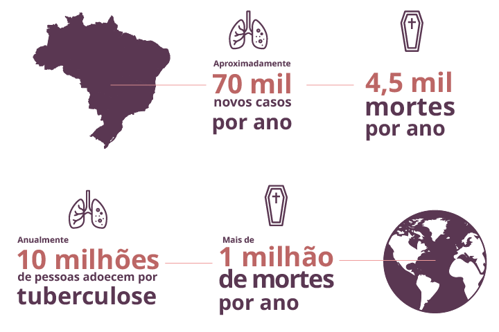
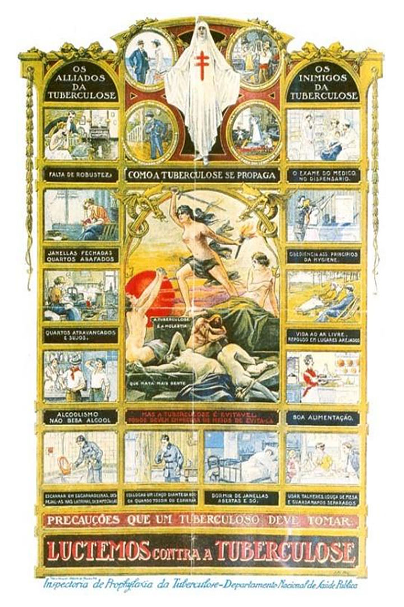
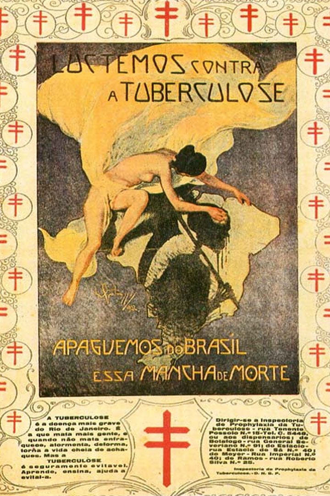

Módulo 2 | Aula 3 Pessoas acometidas por tuberculose e pessoas acometidas pelas hepatites virais
Tópico 1
Tuberculose (TB)
O que é a tuberculose?
A tuberculose é uma doença infecciosa causada pelo Mycobacterium tuberculosis complex, conhecido como bacilo de Koch, que atinge frequentemente os pulmões, mas pode comprometer outros órgãos, principalmente entre pessoas com comprometimento imunológico, como por exemplo aquelas que vivem com HIV/Aids.
priority_highAtenção
Além do HIV/Aids, a tuberculose está associada a fatores de risco específicos, como tabagismo, diabetes, doença renal crônica e desnutrição, que aumentam de forma significativa a probabilidade de ativação do bacilo.
No Brasil, apesar de ser uma doença com altos índices de cura, se tratada adequadamente, a tuberculose é um sério problema de saúde pública, com marcantes raízes sociais.

Transmissão e vulnerabilidade social
A transmissão da tuberculose ocorre por via aérea, através da inalação de aerossóis de gotículas de saliva contendo bacilos durante a fala, espirro ou tosse das pessoas com tuberculose ativa (formas pulmonar ou laríngea).
Existem alguns fatores sociais determinantes para a disseminação do bacilo e, consequentemente, para a concentração de casos: a insegurança alimentar, local de moradia ou de permanência com pouca ventilação, em que convivem muitas pessoas e condições de higiene inadequadas.
Nela a jornalista descreve como a tuberculose tem raízes sociais profundas associadas às condições de vida e de moradia e aos marcadores de vulnerabilidade para a doença, como o número de pessoas vivendo no mesmo domicílio precário, com pouca luminosidade e circulação ineficaz do ar.
Tal cenário é comumente encontrado nas favelas, caracterizadas pela grande densidade populacional e pelas precárias condições de moradia. Por esses motivos, as favelas do Rio de Janeiro, Recife e Manaus ocupam os maiores rankings de tuberculose de acordo com o Ministério da Saúde.
O aumento da transmissão/exposição dessa doença também está diretamente relacionado às condições de vida das populações vulnerabilizadas, entre elas: os povos indígenas; pessoas privadas de liberdade; pessoas em situação de rua e moradores de comunidades carentes. Ciganos, migrantes e refugiados, povos ribeirinhos, pescadores e pertencentes às comunidades de terreiro, quilombolas, também podem estar em más condições de moradia, de acesso à informação e outras vulnerabilidades que podem favorecer o adoecimento pela tuberculose
Sintomas, diagnóstico e tratamento
Os sinais sugestivos para tuberculose são:
Tosse persistente (por mais de duas semanas)
Perda de peso
Febre vespertina
Suores noturnos intensos
Os casos confirmados de tuberculose são de notificação obrigatória. O diagnóstico é realizado a partir de uma avaliação do profissional de saúde de qualquer serviço de atenção primária e envolve: anamnese, exame físico e coleta de escarro para baciloscopia, cultura e teste de sensibilidade, além do teste molecular rápido.
question_mark Saiba mais...
O diagnóstico precoce da infecção pelo HIV em pessoas com tuberculose, com o início o mais cedo possível da terapia antirretroviral, tem reduzido as taxas de mortalidade nesta população.
A pessoa diagnosticada com tuberculose pulmonar deixa de transmitir o bacilo após 15 dias do início do tratamento, caso siga rigorosamente as orientações do profissional de saúde.
O tratamento da tuberculose é gratuito e disponibilizado pelo Sistema Único de Saúde (SUS) e dura no mínimo 6 meses. Importa destacar que, mesmo diante da melhora, o tratamento não deve ser interrompido.
priority_highAtenção
Na grande maioria das vezes, a melhora clínica ocorre em alguns dias ou semanas, o que pode levar ao abandono de tratamento, já que a pessoa pode acreditar, de maneira equivocada, que está curada.
Por isso, o apoio, o acolhimento e a escuta ativa dos familiares, amigos e profissionais de saúde são fundamentais para o sucesso terapêutico, que consiste na tomada diária do medicamento até a conclusão do tratamento. Assim, como forma de garantir que o tratamento não seja interrompido, foi instaurado como parte do protocolo clínico o tratamento diretamente observado. Este consiste na tomada da medicação com a supervisão do tratamento por profissional de saúde qualificado (enfermeiro, farmacêutico, técnico ou auxiliar de enfermagem, agente comunitário de saúde) ou outros profissionais capacitados, como assistentes sociais, desde que supervisionados por profissionais de saúde. Esses profissionais vão à residência das pessoas acometidas pela tuberculose ou recebem essas pessoas no serviço de saúde. Nos dias em que o serviço não funciona, o usuário recebe as doses para tomar em casa.
Os principais objetivos deste tratamento são:
Garantir o tratamento correto e melhorar a atenção às pessoas acometidas por meio de um acolhimento humanizado.
Possibilitar a adesão ao tratamento e garantir a cura, através de um processo individualizado e efetivo de educação em saúde, buscando integrar o indivíduo, a família e a comunidade no processo.
Reduzir a taxa de abandono do tratamento, interromper a cadeia de transmissão da doença e diminuir o surgimento de bacilos multirresistentes e a mortalidade.
Reduzir o sofrimento das pessoas envolvidas com uma doença transmissível e de alto custo social.
Esclarecer as dúvidas sobre as formas de transmissão e os mitos envolvendo a doença, buscando reduzir o estigma e as situações de discriminação.
O bacilo causador da tuberculose é sensível à luz solar e os ambientes com boa circulação de ar propiciam a dispersão de partículas infectantes. Portanto, manter o ambiente bem arejado é um modo de prevenir a doença. Outra medida de prevenção importante para o controle da infecção de contatos domiciliares da pessoa acometida é a educação para redução da transmissão que recomenda algumas ações como, por exemplo:
Proteger a boca com um lenço ou o antebraço ao tossir e espirrar.
Evitar permanecer em ambientes com aglomeração, deixando portas e janelas abertas.
Manter a pessoa acometida dormindo sozinha até que deixe de ser bacilífera.
Além dessas medidas, a busca de contatos sintomáticos ou com infecção latente por tuberculose é muito importante para o controle de infecção.
Aspectos socio-históricos da tuberculose
Alguns estudos em múmias no Egito, há cerca de quatro mil anos, identificaram a tuberculose e Hipócrates (460 a.C. – 377 a.C.) a definiu como a doença mais fatal de seu tempo. Mas, ao longo dos anos, as representações da tuberculose e formas de administrá-la pela medicina sofreram mudanças que impactaram no seu tratamento e na percepção dos indivíduos.
A tuberculose começou a ser definida como uma “doença romântica” ou da “paixão”, por acometer intelectuais e poetas. Como descrito por Porto (2007, p. 44):
format_quote
Ignorando o padecimento dos fimatosos pobres, aglomerados em cortiços ou concentrados nas áreas miseráveis dos centros urbanos, a sensibilidade romântica investiu na concepção da tuberculose como sintoma de caráter nobre e genialidade artística. A literatura da primeira parte do século XIX tematizou a "febre das almas sensíveis" como prova inequívoca da excepcionalidade do caráter e dos dotes artísticos e intelectuais dos tuberculosos. Dentro desta visão romantizada da doença, eram explicados o gênio criativo e o afã por realizações.
Porto (2007, p. 44)
Além das visões provenientes da literatura, havia também aquelas produzidas pela ciência médica. De acordo com Gonçalves (2000), nesse período predominou a crença de que a tuberculose estava ligada à hereditariedade e às condições de vida precárias em termos de habitação e trabalho, devendo ser combatida por meio de políticas higienistas.
Por não ter uma causa ainda estabelecida cientificamente, foram criados uma série de preconceitos e uma percepção distorcida sobre as pessoas contaminadas. A classe médica acreditava que a doença -- denominada também de “tísica pulmonar”, “peste branca” ou “doença do peito”, por provocar um grau excessivo de magreza ou fraqueza -- se desenvolvia por mau comportamento. Marginalizados e sem assistência do estado, as pessoas acometidas por tuberculose passaram a representar uma ameaça diante do potencial de contágio. Muitos desses significados e simbolismos da tuberculose ainda persistem, gerando preconceito e estigma social.
Ainda segundo Gonçalves (2000), para fazer frente à expansão da tuberculose no Brasil, foi indicada a implantação dos métodos de tratamento e de profilaxia considerados os mais modernos e científicos da Europa. Assim, foram criadas em 1899 as primeiras “Ligas Contra a Tuberculose”, com o envolvimento da sociedade civil. As ligas se expandiram no país e tinham como métodos: campanhas de educação sanitária, implantação de sanatórios, dispensários e preventórios; focalizar sua atuação no atendimento aos pobres; estender essas ações aos demais estados; envolver a iniciativa privada, organizações filantrópicas e capacitar pessoal. Havia duas linhas de ação: prevenção e tratamento. Estimulou-se a criação de sanatórios, hospitais e casas de repouso, públicas e privadas. As instituições foram construídas em locais distantes das grandes cidades e com clima considerado ideal para o tratamento.
Segundo Gonçalves (2000), em 1902 foi inaugurado o primeiro dispensário e em 1927, o primeiro preventório. A partir da década de 1930, com o avanço dos conhecimentos médicos e tecnológicos, surgiram novos recursos para combater a tuberculose. Entretanto, a autora destaca que:
format_quote
Embora muito tempo houvesse passado e experiências se acumulado, desde o século XIX até aquele momento, ainda se tinha pruridos em pronunciar o nome da doença. Além de apavorar o doente, a palavra tuberculose trazia consigo uma carga negativa, expressa pelo sofrimento dos infectados e pela incapacidade médico-científica de encontrar a sua cura. Recorria-se a vários eufemismos para descrever aos pacientes o quadro clínico -- era como se houvesse uma correlação mágica entre pronunciar a palavra tuberculose e tê-la. Mencionavam a presença da doença no pulmão como a "mancha" ou "ponto" ou "caverna" ou uma "fraqueza". Esses eufemismos expressavam a dificuldade social de aceitar, tratar e manipular a doença estigmatizadora e o doente estigmatizado por sua capacidade de contágio.
Gonçalves (2000)
Soares (1994), ao analisar campanhas sanitárias, produzidas pela Inspetoria de Profilaxia da Tuberculose, no Rio de Janeiro na década de 1920, amplia a compreensão sobre esse período, conforme se pode notar a partir dos comentários sobre as representações históricas identificadas nos dois cartazes indicados abaixo:

Cartaz da Inspetoria de Profilaxia da Tuberculose, Rio de Janeiro, década de 1920Fonte: Soares, P.P. A dama branca e suas faces: a representação iconográfica da tuberculose. Imagens. Hist Cienca Saude-Manguinhos 1(1). 1994
Representando uma era de avanços, tanto na área do conhecimento científico sobre a doença quanto na compreensão do papel do Estado na luta contra o mal, essas imagens nos mostram um momento de transição entre o mórbido sensualismo predominante no passado e a visão social da tuberculose que prevalecerá por todo o século XX. Apesar do conteúdo didático implícito no primeiro cartaz que adota a linguagem dos quadrinhos, sugerindo uma nova postura de vida orientada por formas de conduta 'saudáveis', notamos que a influência romântica na descrição da doença situa-se no centro da composição, área estratégica. Aí um grupo de mulheres simboliza a luta contra o mal, indicado por corpos que despencam em torpor, e sua prevenção, outro corpo feminino em postura ascensional, portador dos emblemas do conhecimento e da ação: o fogo e a espada.

Cartaz da Inspetoria de Profilaxia, Rio de Janeiro, 1922Fonte: Soares, P.P. A dama branca e suas faces: a representação iconográfica da tuberculose. Imagens. Hist Cienca Saude-Manguinhos 1(1). 1994
O segundo cartaz sugere ainda mais claramente a tradição romântica que associa Eros a Tanatos, representados por uma mulher que, seminua e com as vestes esvoaçantes -- metáfora aérea por excelência --, apaga com gesto delicado uma morte negra e pestilencial que se espalhou pelo país.
menu_bookMaterial complementar
Para mais informações recomendamos as seguintes leituras:
PORTO, A. Representações sociais da tuberculose: estigma e preconceito. Rev. Saúde Pública, São Paulo, 41 (suppl 1), Set 2007.
GONCALVES, H. A tuberculose ao longo dos tempos. Hist. cienc. saúde-Manguinhos, Rio de Janeiro, 7(2), out. 2000.
Políticas e Normas
O controle da tuberculose tem sido considerado nos últimos anos como uma prioridade entre as políticas de saúde pública. Veja:
1996
A Coordenação Nacional de Pneumologia Sanitária (CNPS) lançou o Plano Emergencial para o Controle da Tuberculose, com objetivo de incrementar essa cobertura para 230 municípios.
1998
O CNPS lançou o Plano Nacional de Tuberculose para desenvolver as ações no território nacional e diagnosticar pelo menos 92% dos casos esperados e tratar ao menos 85% até 2001.
1999
O Ministério da Saúde formaliza a Estratégia de Tratamento Supervisionado (Directly Observed Treatment Strategy), conhecido como DOTS.
2000
Na Conferência Ministerial sobre Tuberculose e Desenvolvimento Social, a Declaração de Amsterdã buscou soluções para o controle da tuberculose em países em desenvolvimento.
2003
A partir desse ano, a tuberculose foi colocada como prioridade nas políticas públicas nacionais e foi estabelecido um Plano Nacional de Controle da Tuberculose para o período de 2003 a 2006. O Plano descentralizou e horizontalizou as ações de vigilância, prevenção e controle da tuberculose, baseando-se na estratégia do DOT, implementado pelas unidades de atenção básica no território nacional. (Santos, 2007)
2017
O Ministério da Saúde publicou: Brasil Livre da Tuberculose: Plano Nacional pelo Fim da Tuberculose como Problema de Saúde Pública. O Plano objetiva subsidiar gestores em saúde e coordenadores dos programas de TB nas tomadas de decisões envolvendo o planejamento, priorização, implementação e monitoramento das ações estratégicas de controle da doença, de acordo com as necessidades e as características de seus cenários e subcenários. Dividido em quatro fases de execução (2017 a 2020, 2021 a 2025, 2026 a 2030 e 2031 a 2035), visa atingir suas metas e objetivos, estruturados em três pilares: 1) prevenção e cuidado integrado e centrado no paciente; 2) fortalecimento de políticas arrojadas e sistema de apoio e 3) intensificação da pesquisa e inovação. “Como parte de seus princípios e reconhecendo a importância de outros setores e parceiros no enfrentamento da TB, espera-se que a academia, a sociedade civil e demais atores-chave estejam engajados na implementação das estratégias do Plano Brasil Livre da TB e participem da revisão da resposta à TB no Brasil”.
2021
Foi estabelecida a 2.ª etapa do plano Brasil Livre da Tuberculose: Plano Nacional pelo Fim da Tuberculose(2021-2025) que aponta metas de redução dos coeficientes de incidência para menos de 10 casos por 100 mil habitantes e de mortalidade para menos de 1 óbito por 100 mil habitantes até o ano de 2035. Nessa etapa, além dos objetivos e estratégias, são incluídos exemplos de ações para cada um dos Pilares, destacando a importância do engajamento multisetorial, em especial, a articulação com a sociedade civil, que é apresentada como um dos objetivos do Pilar 2 do Plano Nacional.
Inclusão da Sociedade Civil no controle e tratamento da tuberculose
Como você viu até aqui, a atuação da sociedade civil foi muito importante no processo histórico do cuidado às pessoas acometidas pela tuberculose. Estes aspectos socio-históricos estiveram, inclusive, relacionados aos movimentos e campanhas com fins de educação em saúde e prevenção à infecção, fortalecendo a discussão e criação de políticas públicas e normas institucionais e de Estado.
Por isso, o envolvimento comunitário nas ações de controle da tuberculose é fundamental, ele tem sido um trunfo nas respostas históricas à doença e até hoje é um componente-chave nas políticas de saúde voltadas para erradicação da tuberculose no âmbito global e local.
Revisaremos a seguir os principais fatores que orientam a decisão de incluir a sociedade civil como parte imprescindível de estratégias de controle da tuberculose no Brasil.
pan_tool_alt Clique nas imagens para visualizar as informações.
O acordo estabelecido entre vários países na Declaração de Amsterdã de Combate à Tuberculose, do qual o Brasil é signatário, determina o apoio e parcerias com as organizações não-governamentais (ONG).
A constatação de que o monitoramento das políticas públicas em TB pela sociedade civil promove a eficiência e a transparência das ações e políticas públicas. (Santos Filho e Gomes, 2007)
Estas ações contribuíram para o surgimento em 2003 do Fórum de ONG TB do Rio de Janeiro e, logo depois, da Rede Paulista de Controle Social e do Fórum Baiano. Em 2004 foi criada, por iniciativa do Ministério da Saúde, a Parceria Brasileira Contra a Tuberculose. Estas iniciativas tinham o objetivo de sensibilizar a população para as questões relacionadas à prevenção da tuberculose e à luta contra o estigma e o preconceito. (Santos, 2007)
Já em 2007 foi implantado um projeto financiado pelo Fundo Global que previa a articulação com a sociedade civil, que posteriormente deu origem aos Comitês Estaduais/Metropolitanos de Combate à TB que contam com a atuação oficializada da sociedade civil, o que historicamente, guarda relação com as ligas contra tuberculose.
Em maio de 2012, na 65.a Assembleia Mundial de Saúde, alguns dos países participantes estabeleceram o desenvolvimento de uma estratégia contra a tuberculose, a Estratégia Global e Metas para a Prevenção, Cuidado e Controle da Tuberculose Pós-2015. Esta estratégia foi aprovada em maio de 2014, durante a 67.a Assembleia Mundial de Saúde como a Estratégia Fim da TB. Essa estratégia estabelece parcerias com a sociedade civil organizada para o combate da doença em ações de advocacy tendo em vista a promoção do diagnóstico precoce, a adesão e redução do abandono do tratamento e o enfrentamento do estigma e da discriminação. São as chamadas estratégias CAMS (Comunicação e saúde, Advocacy e Mobilização social) de intervenções consideradas não convencionais para apoiar os objetivos da saúde, que se sustentam nos seguintes pontos:
Comprometimento político e mobilização de recursos para a tuberculose.
Melhoria na detecção de casos e adesão ao tratamento.
Combate ao estigma e a discriminação associados à doença que geram receio da revelação do diagnóstico, podendo comprometer a busca de cuidado e a luta por direitos.
Fortalecimento das pessoas acometidas pela tuberculose, a partir de uma maior conscientização sobre seus direitos.
Ainda hoje, as concepções sobre a doença que levam ao estigma persistem. Embora o bacilo da tuberculose tenha disseminação aérea, ele não é transmissível por objetos compartilhados (talheres, copos, roupas e lençóis).
Ideias errôneas sobre transmissão geram discriminação e sofrimento às pessoas acometidas pela tuberculose.
Ativistas da sociedade civil organizada, trabalhadores e gestores do SUS podem contribuir para o enfrentamento desse problema. As ações da Rede de Comitês Tuberculose também ajudam no enfrentamento do estigma e da discriminação, suas ações colaboram para dar visibilidade para o tema, articular diferentes atores sociais e para combater o estigma associado à tuberculose.
As ações de informação, educação e comunicação em saúde podem contribuir para sensibilizar a população e combater a discriminação e o estigma associadas à tuberculose. Conheça algumas iniciativas:
Exposição virtual Imagens da peste branca: memória da tuberculose
Essa exposição é o resultado de um trabalho de pesquisa, realizado em parceria entre a Casa de Oswaldo Cruz/Fiocruz e o Centro de Referência Hélio Fraga/FNS/Ministério da Saúde. A exposição exibe um rico conjunto de fotografias, cartazes, caricaturas, filmes e outros documentos históricos do início do século XX até a atualidade. Por meio desse acervo a história da tuberculose é revelada, e o público conhecerá a institucionalização da luta contra a doença, ocorrida a partir de 1900, com a criação da Liga Brasileira contra a Tuberculose.
Videodocumentário Diário de tuberculose: Epidemia oculta
O filme busca promover debates públicos e facilitar atividades educativas de promoção da saúde em torno do tema da tuberculose, abordando suas implicações sociais e seus efeitos subjetivos.
O projeto busca difundir o conhecimento sobre a tuberculose entre pessoas privadas de liberdade, seus familiares e profissionais de saúde e de segurança para que atuem no controle da doença nas unidades prisionais nas cinco regiões brasileiras. O objetivo é detectar e tratar precocemente a tuberculose no sistema prisional por meio da utilização de estratégias de comunicação e de educação em saúde. A partir da educação entre pares e da sensibilização de toda a comunidade carcerária, espera-se que todos atuem ativamente no controle da doença. O projeto integra a Campanha Tuberculose - Informação e Tratamento Curam, realizada pelo Ministério da Justiça e Segurança Pública e a FIOCRUZ com a cooperação técnica do Programa Nacional de Controle da Tuberculose.
O site do projeto traz informações sobre os eixos estratégicos de ação, materiais educativos, biblioteca virtual, fotos e vídeos.
Podcasts da Rede Paulista de Controle Social da Tuberculose
Ouça essa playlist de podcasts que foi criada pela Rede Paulista de Controle Social da Tuberculose.
Holofote sobre a TB
Coluna sobre tuberculose no site Saúde Pulsando, com artigos do assistente social e líder comunitário José Carlos Veloso.
E como essas iniciativas podem contribuir no combate do estigma e discriminação sofridos por pessoas acometidas pela tuberculose? Quando as pessoas, a partir do conhecimento sobre o assunto conseguem identificar situações onde alguém está sofrendo discriminação ou passando por alguma situação relacionada ao estigma, elas saberão as atitudes que devem tomar que começam pela denúncia das práticas discriminatórias.
priority_highAtenção
Canais oficiais de comunicação para registro de denúncia das práticas discriminatórias:
Para denunciar situações de discriminação, utilize as ouvidorias municipais e/ou estaduais, o Disque-Saúde 136 (Ouvidoria-Geral do SUS) ou o Disque-100 (Ouvidoria de violações de direitos humanos).
menu_book
Material complementar
Guia orientador: promoção da proteção social para as pessoas acometidas pela tuberculose
A divulgação dos direitos das pessoas acometidas pela TB é fundamental. Leia o Guia orientador para a promoção da proteção social que tem uma série de estratégias voltadas para o foco desse curso.
Consiste em utilizar a comunicação como estratégia de promover informação aos indivíduos e grupos, dentro de um processo democrático, dialógico e respeito aos aspectos culturais de cada grupo.
Estratégia: Advocacy
Consiste na tarefa de realizar ações que influenciem autoridades políticas e governamentais para se sensibilizarem com a doença.
Estratégia: Mobilização social
É uma atividade para promover a união dos diversos atores envolvidos – sociedade civil, profissionais de saúde, políticos – em prol da melhoria da prevenção, tratamento e controle da doença.
BENCHIMOL, Jaime L.
Reforma urbana e revolta da vacina na cidade do Rio de Janeiro. In: Jorge
Ferreira; Lucilia de Almeida Neves. (org.). Brasil republicano. Economia e
sociedade, poder e política, cultura e representações. Rio de Janeiro:
Editora Civilização Brasileira, 2003, v.1, pp. 231-286.
BENCHIMOL, Jaime L. e
Teixeira, Luiz A. Cobras, Lagartos e Outros Bichos: uma História Comparada
dos Institutos Oswaldo Cruz e Butantan. 1. ed. Rio de Janeiro: UFRJ/FIOCRUZ,
1993. 238p .
BENCHIMOL, Jaime L.
(org.) Manguinhos do sonho à vida: a ciência na Belle Époque. 2a. ed. Rio de
Janeiro: Editora Fiocruz, 2020. v.1. 320p.
BENCHIMOL, Jaime L.
Dos micróbios aos mosquitos. Febre amarela e a revolução pausteriana no
Brasil. Rio de Janeiro: Editora Fiocruz/Editora da UFRJ, 1999. v.1. 498p.
CASTRO-SANTOS, Luiz
Antônio de. A reforma sanitária pelo alto: o pioneirismo paulista no início
do século XX. Dados, v. 36, n.3, 1993, pp. 361-92.
CHALHOUB, Sidney.
Cidade febril: cortiços e epidemias na Corte imperial. São Paulo: Companhia
das Letras, 1996, pp. 97-185.
TEIXEIRA, Luiz
Antônio; EDLER, F. C. História e Cultura da Medicina no Brasil. 1. ed. São
Paulo: Aori Produções Culturais, 2012. v.1. 2081p.
TEIXEIRA, Luiz
Antônio. Ciência e Saúde na Terra dos Bandeirantes: A Trajetória do
Instituto Pasteur de São Paulo 1903-1915. 1. ed. Rio de Janeiro: Editora da
Fiocruz, 1995. 233p.
TELAROLLI JÚNIOR,
Rodolpho. Poder e saúde: as epidemias e a formação dos serviços de saúde em
São Paulo. São Paulo: Unesp, 1986.
BATALHA, Cláudio H.
M. “Sociedades de trabalhadores no Rio de Janeiro do século XIX: algumas
reflexões em torno da formação da classe operária”, in: Cadernos AEL:
sociedades operárias e mutualismo, Campinas, UNICAM-IFCH, vol. 6, no 10/11,
1999, pp. 43-66.
BOSCHETTI, Ivanete.
Seguridade social e trabalho: paradoxos na construção de políticas de
previdência e assistência social no Brasil. Brasília: Letras Livres; Ed.
UnB, 2006.
BRAGA, Jose Carlos de
Souza & PAULA, Sergio Goes de. Saúde e previdência: estudos de política
social. São Paulo: Cebes/Hucitec, 1981.
CARDOSO, Adalberto
Moreira Cardoso. A Construção da sociedade do trabalho no Brasil, Rio de
janeiro: FGV, 2014.
CORREA, Larissa.
“Corporativismo e regulamentação do trabalho no Brasil: um debate entre
especialistas brasileiros e norte-americanos na década de 1960”, Sociologia
Antropologia, Vol. 6, nº 1 (2016a): 209 -234.
CORREA, Larissa. “O
corporativismo dos trabalhadores: leis e direitos na Justiça do Trabalho
entre os regimes democrático e ditatorial militar no Brasil (1953-1978)”,
vol 42, nº 2 (2016b): 500-526.
Dicionário
Histórico-Biográfico Brasileiro pós-1930. 2. ed. Rio de janeiro: Ed. FGV,
CPDOC, 2000.
FLEURY, Sonia.
Assistência médica previdenciária: evolução e crise de uma política social.
In: FLEURY, Sonia; BAHIA, Lígia e AMARANTE, Paulo (Orgs.). Saúde em debate:
fundamentos da reforma sanitária. Rio de Janeiro: CEBES, 2007.
FORTES, Alexandre.
“Da solidariedade à assistência: estratégias organizativas e mutualidade no
movimento operário de Porto Alegre na primeira metade do século XX”, in:
Cadernos AEL: sociedades operárias e mutualismo, Campinas, UNICAM-IFCH, vol.
6, no 10/11, 1999, pp. 173-218.
GOMES, Angela de
Castro. Ideologia e trabalho no Estado Novo. In: PANDOLFI, Dulce (Org.).
Repensando o Estado Novo. Rio de Janeiro: Ed. FGV, 1999, p. 57.
GOMES, Angela de
Castro. A invenção do trabalhismo. São Paulo; Rio de Janeiro: Vértice;
Iuperj, 1988.
GOMES, Angela de
Castro. “Ideologia e Trabalho no Estado Novo” , in: PANDOLFI, Dulce (org.)
Repensando o Estado Novo, Rio de JANEIRO, Editora da FGV, 1999, p. 57.
__________Aprendizado
e Difusão na Constituição de Políticas: A Previdência social e seus
técnicos, in: Revista Brasileira de Ciências Sociais, vol 3, nº 7
(1988):84-98.
HOCHMAN, Gilberto.
Duas gêneses, duas histórias na previdência social brasileira: o Instituto
dos Industriários e o Instituto dos Bancários. Cadernos de História e Saúde
– Casa de Oswaldo Cruz, v. 2, Fiocruz, 1992.
______ e FONSECA,
Cristina M. O. O que há de novo? Políticas de saúde pública e previdência,
1937-45. In: PANDOLFI, Dulce (Org.). Repensando o Estado Novo. Rio de
Janeiro: Ed. FGV, 1999.
KERSTENETZKY, Célia.
O Estado do Bem-Estar Social na Idade da Razão. Rio de Janeiro: Elselvier,
2012.
LOBO, Valéria
Marques. Corporativismo à Brasileira: entre o autoritarismo e a democracia,
Estudos Ibero- americanos, 527-552, vol 42, nº 2, 2016.
________ Democracia e
Justiça: Tribunais do Trabalho no Estado Novo, Em, O que há de novo sobre o
Estado Novo? Autoritarismo e democracia, orgs. Freire, Américo; Martinho,
Francisco Carlos P; Vannucchi, Marco Aurélio, 111-134 Rio de Janeiro:FGV,
2019.
MALLOY, James.
Política de previdência social no Brasil. Rio de Janeiro: Graal, 1986.
OLIVEIRA, Jaime e
TEIXEIRA, Sônia. (Im)previdêcia social: 60 anos de história da previdência
no Brasil. Petrópolis; Rio de Janeiro: Vozes; Abrasco, 1986.
REIS, José Roberto
Franco. Considerações historiográficas sobre corporativismo, cidadania
regulada e a história da assistência à saúde no Brasil: dádiva ou direito?
(1930-1964), in: LOCUS, Revista de História, Juiz de Fora, vol 26, n.2,
2020.
__________Vargas e a
Previdência: entre a dádiva e o direito, in: PONTE, Carlos, Fidélis;
FALHEIROS, Ialê (orgs). Na Corda bamba de sombrinha: a saúde no fio da
História, Rio de Janeiro, Fiocruz/COC; Fiocruz/EPSJV, 2010.
_________Estado,
trabalhadores e previdência social: a dialética do direito e do protetor
(1937-47). In: SENA JUNIOR, Zacarias F. de. O Estado Novo: as múltiplas
faces de uma experiência autoritária. Salvador: Eduneb, 2008.
______. Cultura de
direitos e Estado: os caminhos (in)certos da cidadania no Brasil. In:
MOROSINI, Márcia Valéria G. C. e REIS, José Roberto F. Sociedade, Estado e
direito à saúde. Rio de Janeiro: EPSJV; Fiocruz, 2007.
SANTOS, Wanderley
Guilherme dos. Cidadania e justiça: a política social na ordem brasileira.
2. ed. Rio de Janeiro: Campus, 1987.
VIANNA, Maria Lúcia
T. Werneck. A americanização perversa da seguridade social do Brasil:
estratégias de bem-estar e políticas públicas. 2. ed. Rio de Janeiro: Revan;
Ucam-Iuperj, 2000.
TEIXEIRA, Sonia
Fleury. “O dilema da reforma sanitária Brasileira”. In: Berlinguer,
Giovanni; Teixeira, Sonia Fleury; Campos, Gastão Wagner de Sousa. Reforma
sanitária: Itália e Brasil. São Paulo: Editora Cebes; Hucitec. p.195-207.
1988
PAIVA, Carlos
Henrique Assunção e TEIXEIRA, Luiz Antonio. “Reforma sanitária e a criação
do Sistema Único de Saúde: notas sobre contextos e autores”. Hist. cienc.
saude-Manguinhos, Mar 2014, vol.21, no.1, p.15-36.
Créditos
Ministério da Saúde
Marcelo Queiroga
Ministro
Gil Casimiro
Coordenador Ministério da Saúde
Fundação Oswaldo Cruz – Fiocruz
Nísia Trindade Lima
Presidente
Cristiani Vieira Machado
Vice-Presidência de Educação, Informação e Comunicação (VPEIC)
Campus Virtual Fiocruz
Ana Cristina da Matta Furniel
Coordenadora geral
Adélia Araújo
Coordenadora de produção
Simone Monteiro
Coordenação acadêmica
Rosane Mendes
Coordenadora Plataforma Educare
Fernanda Sousa
Roberta Saboya
Designers Educacionais
Aline Polycarpo
Danilo Blum
Luciana Nunes
Designers de Interface e Interação
Teo Venerando
Edição Audiovisual
Nestablo Ramos Neto
Ilustrador
Carmélia Brito
Recursos Educacionais - Bibliotecária
Maria Angélica Marcondes Drska
Revisão de Português
Bruno Alexandre de Oliveira
Eduardo Xavier da Silva
Suporte Técnico de Tecnologia da Informação - Desenvolvedor
Adriano Lourenço
Orlando Terra
Suporte Técnico de Tecnologia da Informação - Analista de suporte